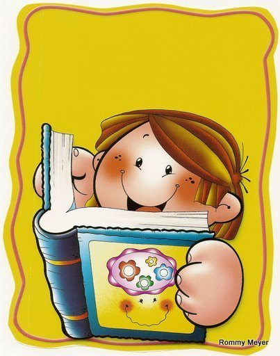

A continuación, se muestra una serie de actividades, que incluye historias para que los niños se diviertan leyendo, fortalezcan sus competencias lectoras y desarrollen su imaginación creando sus propias historias.
Actividades
Leamos el siguiente cuento y realiza la actividad:
Juan, el castorcito
Había una vez un hermoso bosque lleno de grandes árboles, flores y un riachuelo que proporcionaba agua a todos los animalitos que vivían en ese alegre lugar.
Juan era un pequeño castorcito a quien su papá castor le enseñaba con mucha técnica el oficio de la familia: fabricar diques. Un día papá castor le dijo:
-Juan, ya es tiempo que hagas tu propio dique. Irás a la parte baja del río y trabajarás allí por las mañanas, y por las tardes tendrás tiempo para jugar con tus amigos.
El pequeño castorcito se fue muy contento, ya que su padre le había confiado una gran responsabilidad. Tan pronto llegó, empezó su obra recolectando pequeñas ramas de árboles, pero al poco rato se distrajo. Se sumergió en el agua, vio a los peces nadar de un lugar a otro y eso le dio una idea. Rápidamente fue a buscar a sus amigos.
- ¡Hola, Rabito! ¡Qué linda mañana! ¿Vamos a jugar? - ¡Sí juguemos!, -le contestó el conejito-, pero tan pronto termine de ayudar a mi papá en la siembra de zanahorias.
Luego, fue donde su amiga la ardillita.
- ¡Qué buen día, Linda! ¿Quieres jugar conmigo?
- ¡Me encantaría, Juan! -le contestó la ardilla-, pero en esta época caen muchas bellotas y debo ayudar a mamá a recogerlas. Por la tarde jugaremos.
Juan fue a buscar a sus otros amigos, pero todos estaban ocupados. Entonces regresó al riachuelo y se puso a jugar con los peces. Se divertía tanto que se olvidó por completo de la labor encomendada. De pronto se acordó y rápidamente comenzó a colocar rama tras rama muy a la ligera, sin tener en cuenta lo que había aprendido de su padre. Hasta que escuchó una voz que lo llamaba:

-Juan, ven pronto es tiempo de almorzar. Debes estar agotado, disfruta tu almuerzo y luego ve a buscar a tus amigos.
Le pareció genial jugar, jugar y jugar. Esto se repitió todos los días. El castorcito no estaba cumpliendo con su responsabilidad. Un día comenzó a llover con mayor intensidad. Esto preocupó a los animales del bosque. Poco a poco el cauce del río creció, por lo que aumentaba el peligro en los hogares y sembríos de ellos. Los animales rogaban para que los diques de papá castor y Juan lograran desviar las aguas. Juan se sentía muy nervioso, pues sabía que su dique no estaba bien hecho. Sentía culpabilidad al imaginar las consecuencias de su irresponsabilidad.
El dique de papá castor no resistió. El agua pasó por encima, por abajo, por todos lados. Entonces las esperanzas estaban en el dique de Juan. Este, al ver la avalancha, estalló en llanto. -Papá, amigos, perdónenme, mi dique no está bien hecho, ya que en lugar de hacerlo me puse a jugar, sin pensar en lo importante que era para todos el que yo haga mi trabajo correctamente. Perdónenme, buuu, buuu...
El tiempo transcurría y el dique de Juan resistía firmemente la fuerza del río y lo desviaba hacia otro lado. Por fin dejó de llover, y el nivel del agua descendió. El castorcito, sorprendido, no encontraba ninguna explicación. En eso se le acercaron todos los animales, y su papá le dijo:
-Sabíamos que optaste por jugar y no fuiste responsable. Así que, mientras tú dormías, tus amigos y yo arreglábamos lo que habías hecho mal. -Quisimos darte una lección -dijo Linda. -Evadir nuestra responsabilidad puede afectar a todos -continuó papá castor. - ¡Gracias, papá! ¡Gracias, amigos! -dijo Juan-. De ahora en adelante cumpliré con todas las responsabilidades que me encarguen. José Luis Solís Díaz (Perú)
Comprendo y reflexiono
1. Busca en el diccionario el significado de estas palabras:
2. Responde:
3. Une las palabras que tengan el mismo significado.
Ahora escribamos un cuento
Para escribir un cuento, debes conocer los tres momentos en que se narra la historia.
1. Une con una línea el momento del cuento con el párrafo que le corresponde.
2. Prepara: un cuento para ser narrado, pero primero toma en
cuenta lo siguiente:
- Piensa en los hechos que van a suceder.
- Debes
tener en cuenta los tres momentos.
- El cuento no
debeser muy largo.
- Ten en cuenta los signos de
entonación (¿? ¡!) y puntuación
Construyo historias
1. Observa estas imágenes.
2. Ordena la secuencia de estas imágenes y escribe una historia.
- Acontecimiento inicial.
- Acción (nudo).
-
Desenlace.
Somos escritores
3. Observa las imágenes
4. Crea una historia con las imágenes
5. A continuación ingresa a los siguientes links, encontrarás lecturas comprensivas para primaria, escucha y lee los cuentos que te gusten, también podrás interactuar a través de las distintas actividades que encontrarás. Elige la tuya y diviértete leyendo.
Cuentos interactivos para niños
Mundo Primaria te trae sus cuentos interactivos para que leer sea una de las actividades favoritas de los niños desde pequeños. Los cuentos interactivos fomentarán su gusto por la lectura a través de nuevas formas de escuchar historias. https://www.mundoprimaria.com/cuentos-infantiles-cortos/cuentos-interactivos-ninosLecturas comprensivas para trabajar en 3º y 4º de Primaria
La lectura comprensiva es clave en la educación de los niños, hay que tener en cuenta la importancia de comprender lo que se lee desde que aprenden a juntar algunas palabras en frases sencillas. Por lo tanto, se hace necesario inculcarles desde pequeños el valor de entender los textos, evitando de esta forma problemas que podrían surgir más adelante. https://www.mundoprimaria.com/lecturas-para-ninos-primaria/lecturas-comprensivasCuentos infantiles para educar niños alegres y con valores
Esta página incluye todos los cuentos del sitio relacionados con la paz, convivir pacíficamente, la solidaridad, el respeto, evitar el amor, la amistad, etc... Útiles para educar y enseñar a los niños la importancia de los valores. https://cuentosparadormir.com/Bibliografía
-
El Cuento para Tercer Grado de Primaria. (2019, 25 noviembre). Web del Docente. https://webdeldocente.com/comunicacion-tercer-grado/el-cuento/
-
Primaria, M. (2020, 8 octubre). Cuentos interactivos para niños. Mundo Primaria. https://www.mundoprimaria.com/cuentos-infantiles-cortos/cuentos-interactivos-ninos
-
Sacristán, P. P., & Sacristán, P. P. (2021). Cuentos infantiles para educar NIÑOS con VALORES. Cuentos para dormir .com. https://cuentosparadormir.com/
-
Primaria, M. (2020a, octubre 7). LECTURAS comprensivas para NIÑOS ➔ 3o y 4o de Primaria. Mundo Primaria. https://www.mundoprimaria.com/lecturas-para-ninos-primaria/lecturas-comprensivas
-
Imágenes - Google zoeken. (2021). el cuento imágenes. https://www.google.com/search?q=el+cuento+imagenes&rlz=1C1CHBF_esCO918CO918&sxsrf=ALeKk00KWwJCcpN3cJUTyDvgA-XduddLMQ:1614312609966&source=lnms&tbm=isch&sa=X&ved=2ahUKEwjnibGN14bvAhXDwVkKHerDCNIQ_AUoAXoECBIQAw&biw=1366&bih=568